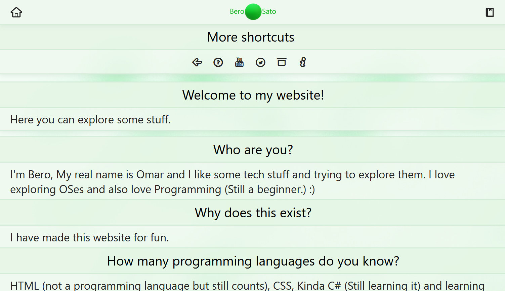
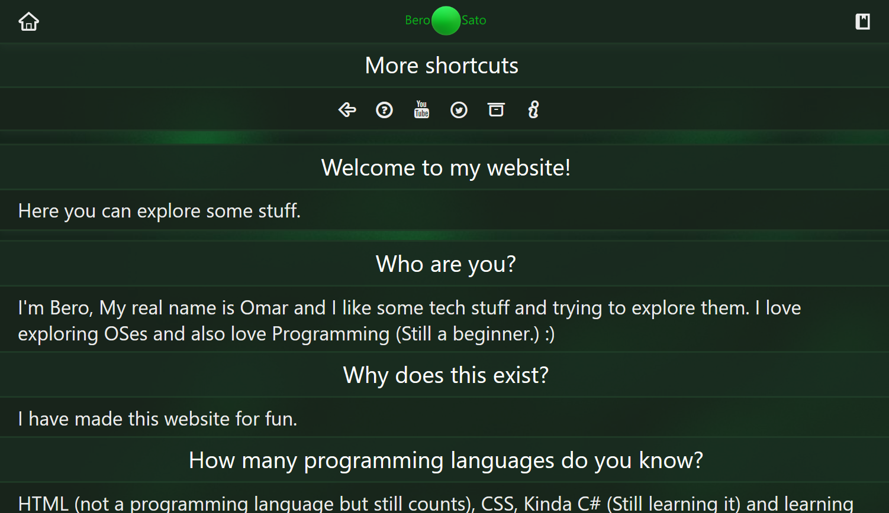
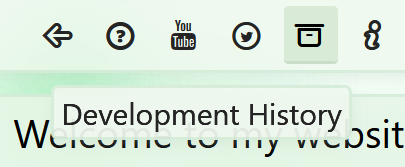
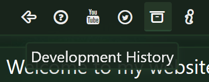

The new Old Style
2024/4/16
Greetings.
Welcome to this new post where I'm going to finally show you the new update of Classic Style.
So... Let's start!
Classic Style is now "Old Style"
Yes, I thought that "Classic" doesn't fit this website as it origanlly meant to be looking like classic sites.
That's why it's now called "Old Style" which kinda makes sense to this website now.
So, Let's now see what's new with Old Style!
What's new
 
The Old Style is now based on Version 3.0.5 with some changes that fit with the current look.
 
The new Old Style is also using some features from other Versions such as the tooltip from Version 3.5 That got later replaced with the latest release.
Some other Changes
- "More shortcuts" now has more buttons/options just like the regular site.
- The hover animation is not present when hovering anymore, Just like what the Classic Style was origanlly.
- Texts size is now smaller as it went to '22px' in normal texts and '26px' in main texts (In articles and footer).
- A new startup animation is present and it's similar to Version 3.5 and 3.7
- A new startup animation for the header is present and it's similar to Version 2.5's main startup animation.
- "List of my Projects, Latest Videos, Latest Tweets" Are now similar to the current ones in Version 3.7 (With the style of 3.0.5 as mentioned above).
- Footer links are now coming with texts instead of just icons.
Release Date and Where to try
You can try it now here or simply go to /old in the link (berosato.github.io).
That's all!
That's all for now, Thank you for reading this post.
Note: As of what I said in the past post, This is the last thing I would do for this website so I can focus on my future.
There would be an upcoming post which would be the last ever post in this site which I would say some things.
See you all later!
- Omar